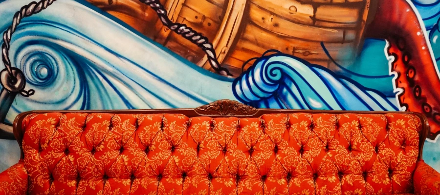

Blog
Making uncomfortable comfortable
Good design often looks neat and well ordered.
Great design usually doesn’t, at least not at first.
Good design follows a process.
Great design tends to wander a bit before it finds its way.
Good design feels familiar.
Great design often feels uncomfortable.
That discomfort is one of the reasons MVPs and iterative delivery can be so useful. They give us permission to start somewhere imperfect and learn our way forward, rather than feeling pressure to get everything right in one go.

Messy and uncomfortable aren’t words most organisations are keen to hear. Large products and teams are already complex enough without deliberately introducing uncertainty. Even when we’re trying to keep things simple, it can be hard for people to hold all the moving parts in their heads. Doing things differently on top of that can feel risky.
But most digital teams already work in an agile, iterative way. That’s not a limitation. It’s an advantage.
Early versions of a feature rarely live up to the original vision, and that can be frustrating, especially for designers. It’s tempting to see those first iterations as compromises rather than stepping stones. In reality, they’re often the only way to discover what the product actually needs to become.
At the start of a project there are always unknowns, and usually more of them than we realise. Technical constraints, user behaviour, organisational pressures. Even with experience, it’s unrealistic to expect a fully formed solution from day one. Modern digital products are simply too interconnected for that.
The trick, I think, is being deliberate about when and how we apply creativity.
Not every moment needs to be divergent or experimental. Structure and process are essential, especially early on. But there are points in a project where it’s worth leaning into exploration, allowing things to feel unresolved for a while, and trusting that clarity will come later.
Great design often emerges gradually. It’s shaped through iteration, learning and a willingness to sit with a bit of uncertainty along the way. The discomfort doesn’t disappear, but over time it becomes familiar.
And once it’s familiar, it’s much easier to help others feel comfortable with it too.